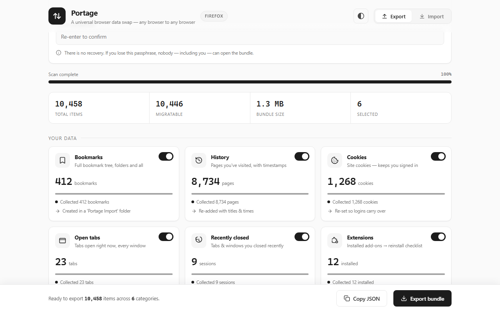
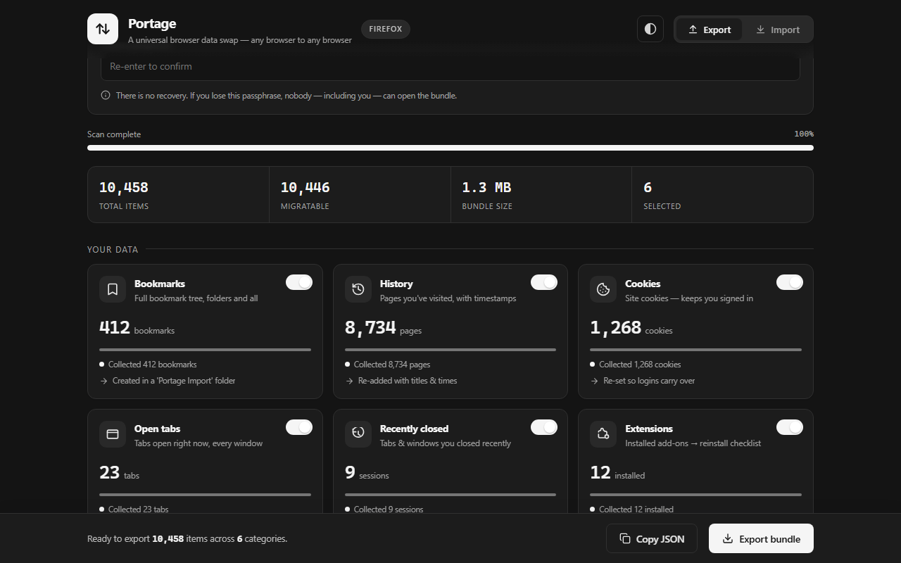
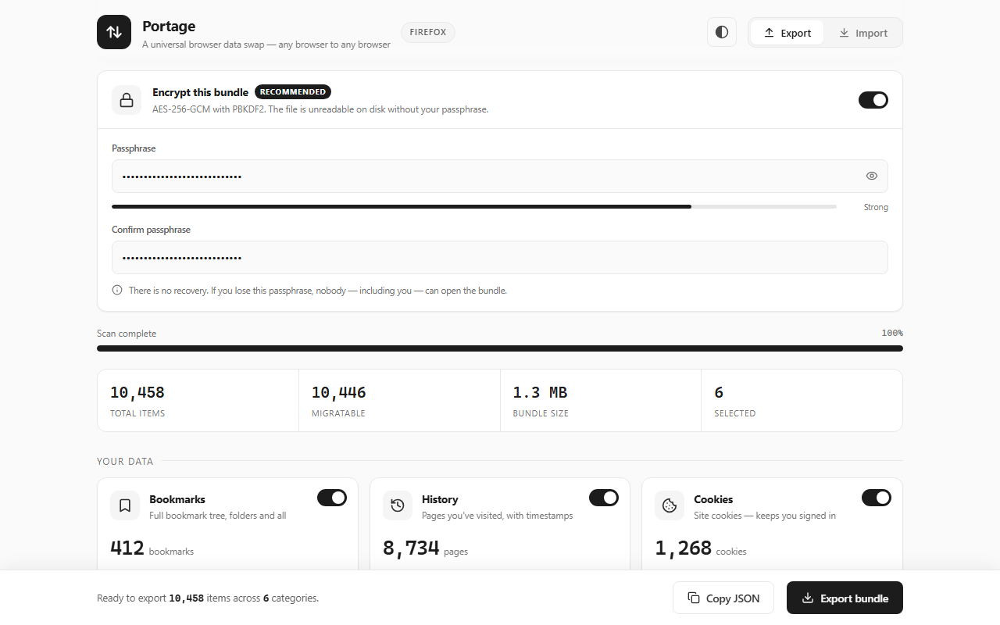
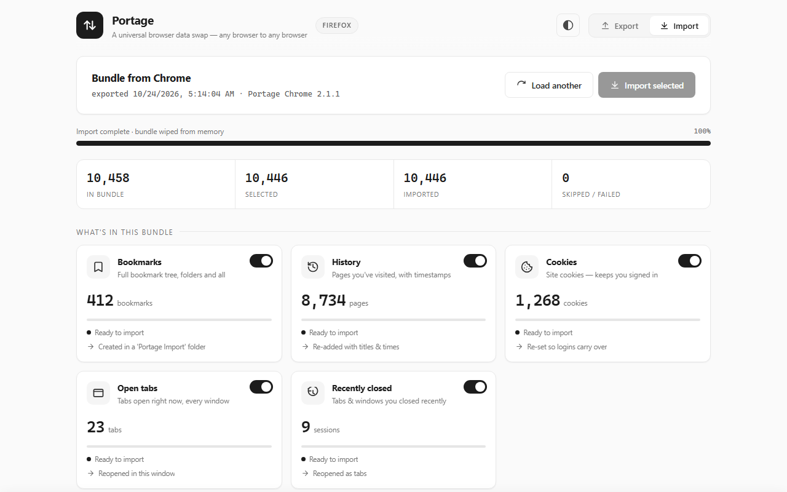
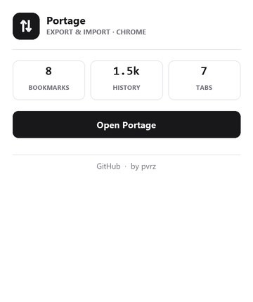

Scan and choose
One click reads what this browser can move. Switch off anything you want to leave behind.
Portage packs your bookmarks, history, cookies and tabs into one encrypted file, then rebuilds them in any browser. Chrome to Firefox, Firefox to Chrome, or a fresh install of either.
Free and open source. Nothing leaves your device. Other ways to install


One click reads what this browser can move. Switch off anything you want to leave behind.

Encrypt the bundle with a passphrase you choose. Without it, the file is unreadable.

Open Portage in the other browser, drop the file in, and watch everything come back.
Built on the official browser APIs, so it only touches data it can actually move, and says so when it can't.
Your bundle carries sign-in cookies, so Portage treats it like a password vault. Encryption is on by default, and the passphrase only ever lives in memory.
Quick counts at a glance, and the full workspace one click away.

No servers, no accounts, nothing to sign up for.
No browser can install extensions for you, so you get a list with store links.
The bundle is plain JSON, so it doesn't care where it came from. Chrome to Firefox, Firefox to Chrome, or the same browser on a new machine or profile.
Monochrome by default, with any accent you like. The palette adjusts itself to keep text readable.
Extensions can only use the browser's own APIs. Here's everything Portage moves, and exactly how it lands.
| Data | Export | On import |
|---|---|---|
| Bookmarks | Full tree, folders and all | Recreated in a “Portage Import” folder |
| History | Pages with timestamps | Re-added. Firefox keeps titles and times |
| Cookies | Including partitioned cookies | Re-set so you stay signed in |
| Open tabs | Every window | Reopened in this window |
| Recently closed | Tabs and windows | Reopened as tabs |
| Reading list | Chrome only | Chrome: reading list. Firefox: a bookmark folder |
| Extensions | As a checklist | No browser API can reinstall them, so you get store links |
| Passwords | Not available | Browsers don't expose them. Use the built-in password export |
Install Portage in both browsers, export from one, import into the other. It takes about a minute.